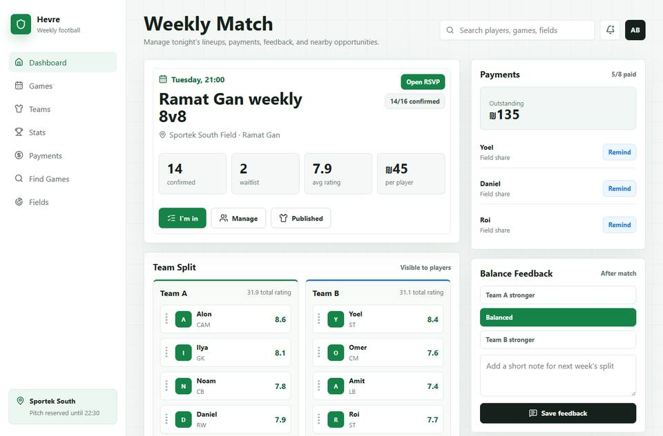
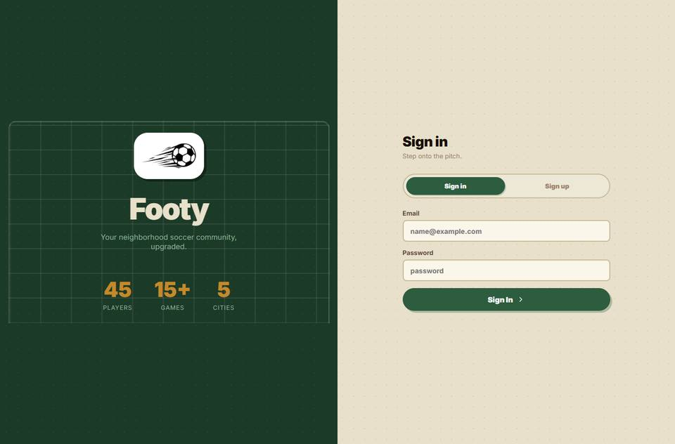
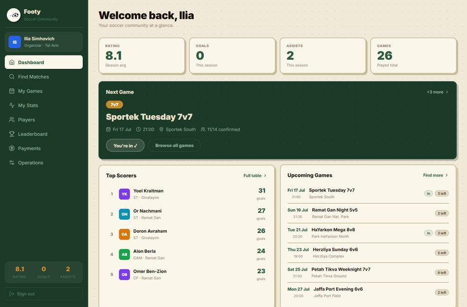
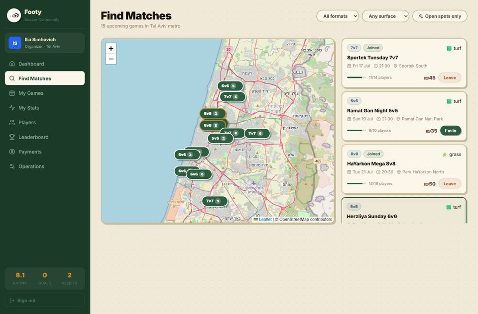

3.1 Hevre — גרסה ישנה

מסך שבועי: חלוקת קבוצות, תשלומים ומשוב איזון.

לוח מובילים ורשימת משחקים קרובים.
אפליקציית ווב לניהול קהילת כדורגל שכונתית
גרסה סופית להגשת הפרויקט
Footy היא אפליקציית React/Vite לניהול משחקי כדורגל קהילתיים. המערכת מאפשרת התחברות והרשמה, איתור משחקים על מפה, RSVP, פרופילי שחקנים, ניהול קבוצות, דירוג שחקנים לאחר משחק, תשלומים, כלי תפעול למארגנים וחיבור אופציונלי ל-Supabase.
הגרסה הראשונה, Hevre, הציגה מסך שבועי בסיסי עם משחק אחד, חלוקת קבוצות, תשלומים, משוב איזון ולוח מובילים. היא שימשה כהוכחת רעיון ראשונית.
הגרסה הנוכחית מרחיבה את הרעיון למערכת מלאה: 45 שחקנים, משחקים עתידיים, מפה, הרשמה, ניהול משחקים, דירוגים חיים, אלגוריתם איזון, וסביבת Deploy ל-Vercel.
| תחום | Hevre הישן | Footy הנוכחי |
|---|---|---|
| משתמשים | רשימה סטטית | 45 שחקנים, הרשמה ופרופילים |
| משחקים | משחק שבועי אחד | משחקים עתידיים ועבר, RSVP ומפה |
| איזון קבוצות | חלוקה ידנית/סטטית | דירוג חי + אלגוריתם Greedy |
| נתונים | Mock מקומי בלבד | Mock מקומי + Supabase אופציונלי |
| תפעול | אין | Operations למארגנים ואדמין |




| שם מלא | תעודת זהות | אחריות מרכזית |
|---|---|---|
| איליה סימחוביץ' | 323637793 | אלגוריתם משחקים שווים ודירוג שחקנים |
| אלון ברלה | 208544064 | בסיסי נתונים, Supabase, מודל נתונים ושמירת מידע |
| יואל קרייטמן | 209710615 | שרת, פריסה וסביבת Production |
| חבר צוות | אחריות |
|---|---|
| איליה סימחוביץ' | אלגוריתם משחקים שווים, דירוג שחקנים, מודל mu/sigma, איזון קבוצות Greedy, חיבור ל-Match Manager. |
| אלון ברלה | בסיסי נתונים, Supabase, סכמת DB, שכבת repository, signup, שמירת נתונים וניהול סודות. |
| יואל קרייטמן | שרת ופריסה, הכנת Vercel, משתני סביבה, בדיקת הרצה חיצונית וחיבור ל-Supabase. |
| שכבה | קבצים / כלים | תפקיד |
|---|---|---|
| UI | src/components/ | מסכי React וקומפוננטות |
| Data | src/data.js | 45 שחקנים, משחקים, מיקומים |
| Algorithm | src/trueskill.js | דירוג TrueSkill-style ואיכות משחק |
| Roles | src/roles.js | Player / Organizer / Admin |
| Backend | src/supabaseClient.js, src/supabaseRepository.js | חיבור ושמירת נתונים |
| DB | supabase/migrations/ | סכמת SQL |
| Tests | src/test/ | 65 בדיקות אוטומטיות |
| כלי / ספרייה | שימוש |
|---|---|
| React 19 + Vite 8 | Frontend ו-build |
| Leaflet + OpenStreetMap | מפת משחקים |
| Lucide React | אייקונים |
| Supabase JS | Backend אופציונלי |
| Vitest + React Testing Library | בדיקות |
| Vercel | פריסה חינמית |
לכל שחקן יש שני ערכים: mu שמייצג את רמת השחקן המשוערת, ו-sigma שמייצג את רמת חוסר הוודאות. שחקנים ותיקים מקבלים sigma נמוך יותר, ושחקנים חדשים מקבלים sigma גבוה יותר כדי שהמערכת תלמד אותם מהר.
לאחר סיום משחק, המנצחים מקבלים תוספת ל-mu, המפסידים יורדים, וניצחון של קבוצה חלשה מול קבוצה חזקה גורם לשינוי גדול יותר. כך הדירוג לומד מהיסטוריית המשחקים.
האלגוריתם ממיין את השחקנים לפי mu מהגבוה לנמוך, ואז בכל צעד מכניס את השחקן הבא לקבוצה שסכום ה-mu שלה נמוך יותר. התוצאה היא חלוקה מהירה, יציבה וברורה.
1. Sort players by live mu 2. Start Team A and Team B empty 3. Put each next player into the team with lower total mu 4. Show match quality percentage
Supabase משמש כבסיס נתונים אופציונלי. אם לא מוגדרים מפתחות Supabase, האפליקציה עובדת על נתוני הדמו המקומיים. אם מוגדרים מפתחות, ניתן לשמור RSVP, קבוצות, פרופילים, דירוגים ומשוב איזון בענן.
הפרויקט מוכן לפריסה חינמית ב-Vercel (Frontend) ו-Supabase (Backend אופציונלי).
npm install npm run dev Open: http://localhost:5173 Demo: ilia@footy.app / footy123
הגדרות Vercel:
Build command: npm run build Output directory: dist Environment: VITE_DEMO_PASSWORD=footy123 VITE_SUPABASE_URL=... VITE_SUPABASE_ANON_KEY=...
הפרויקט כולל 65 בדיקות Vitest ו-React Testing Library. הבדיקות מכסות תקינות נתונים, זרימות UI, signup, דירוגים, איזון קבוצות וסיום משחק.
npm test
תוצאה מאומתת: 65/65 passed
הסקירה הספרותית שימשה להצדקת הבחירות האלגוריתמיות והארכיטקטוניות בפרויקט.
| # | מקור | שימוש בפרויקט |
|---|---|---|
| 1 | Herbrich, R., Minka, T., Graepel, T. TrueSkill: A Bayesian Skill Rating System, Microsoft Research / NeurIPS, 2007. https://www.microsoft.com/en-us/research/publication/trueskilltm-a-bayesian-skill-rating-system/ | בסיס למודל דירוג שחקנים עם mu ו-sigma. |
| 2 | Minka, T. et al. TrueSkill 2: An improved Bayesian skill rating system, Microsoft Research, 2018. https://www.microsoft.com/en-us/research/wp-content/uploads/2018/03/trueskill2.pdf | רעיונות להרחבה עתידית של AI balancing עם יותר נתוני שחקן. |
| 3 | Elo, A. The Rating of Chessplayers, Past and Present, 1978. | מודל להשוואה והסבר למה Elo פחות מתאים למשחקי קבוצות. |
| 4 | Glickman, M. Example of the Glicko-2 System. http://www.glicko.net/glicko/glicko2.pdf | מודל דירוג חלופי הכולל חוסר ודאות. |
| 5 | Gale, D., Shapley, L. College Admissions and the Stability of Marriage, 1962. | אלטרנטיבה להתאמת שחקנים למשחקים לפי העדפות. |
| 6 | Cormen, Leiserson, Rivest, Stein. Introduction to Algorithms - Greedy Algorithms. | בסיס תאורטי לשימוש ב-Greedy balancing. |
| 7 | React Documentation - https://react.dev | מודל קומפוננטות וארכיטקטורת UI. |
| 8 | Vite Documentation - https://vite.dev | כלי build והרצה מקומית. |
| 9 | Supabase Documentation - https://supabase.com/docs | Backend-as-a-Service, בסיס נתונים ו-API. |
| 10 | Leaflet Documentation - https://leafletjs.com | מפה ותצוגת מיקומי משחקים. |
README.md עם הוראות התקנה, build, test והרצה.https://github.com/AlonB22/Hevre-App (לא מגישים קישור במקום קבצים).